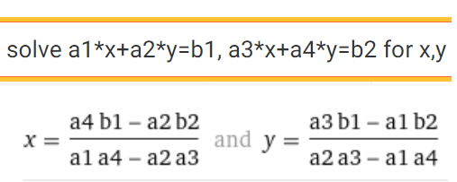

Yhtälöparit
Sisällys
Yhtälöparit¶
Lineaariset yhtälöparit¶
Lineaarisen yhtälöparin perusmuoto
\(\begin{matrix} a_1 x + a_2 y = b_1\\ a_3 x + a_4 y = b_2 \end{matrix}\)
Muuttujat x ja y ovat vasemmalla puolen omissa sarakkeissaan, vakiot oikealla puolen yhtälöitä.
Perinteisiä ratkaisutapoja ovat eliminoimismenetelmä ja sijoitusmenetelmä
Eliminoimismenetelmä
Kerrotaan jompikumpi tai molemmat yhtälöistä sopivilla vakioilla siten, että
jommankumman muuttujan kertoimet yhtälöissä ovat vastaluvut.
Lasketaan yhtälöt yhteen, jolloin saadaan 1. asteen yhtälö, josta toinen muuttujista voidaan ratkaista
Ratkaistu muuttuja sijoitetaan johonkin alkuperäisistä yhtälöistä ja ratkaistan toinen muuttuja.
Esim. Ratkaise eliminoimismenetelmällä yhtälöpari
\(\begin{matrix} 2x-5y=-4\\ 3x+2y=13 \end{matrix}\)
Ratkaisu
Kerrotaan 1. yhtälö luvulla 2 ja 2. yhtälö luvulla 5 , jolloin saadaan
\(\begin{matrix}
4x-10y=-8 \\
15x+10y=65
\end{matrix}\)
Lasketaan yhtälöt puolittain yhteen. Saadaan 19 x = 57, josta x = 57/9 = 3
Sijoitetaan tämä 1. yhtälöön, jolloin saadaan 2*3-5y=-4 eli 10 = 5y , josta y = 2
Vastaus: x = 3 ja y = 2
Sijoitusmenetelmä
Ratkaistaan 1. (tai 2.) yhtälö esim. x:n suhteen.
Sijoitetaan saatu lauseke kyseisen x:n tilalle toiseen yhtälöön, josta ratkaistaan y.
x saadaan sijoittamalla y kohdassa 1. saatuun lausekkeeseen
Esim. Ratkaise sijoitusmenetelmällä yhtälöpari
\(\begin{matrix} 2x-5y=-4 \\ 3x+2y=13 \end{matrix}\)
Ratkaisu
Ratkaistaan 1. yhtälö x:n suhteen. Saadaan 2x=5y-4 , josta x = 5/2y - 2
Sijoitetaan tämä 2.:een yhtälöön => 3(5/2y-2)+2y = 13 => 15/2 y -6 + 2y=13 => 19/2 y = 19 => y = 2
Sijoitetaan tämä kohdassa 1 saatuun lausekkeeseen => x = \(5/2\cdot2-2\) = 3
Vastaus: x = 3 ja y = 2
Lineaarisen yhtälöparin ratkaisukaava¶
Kun ratkaistaan WolframAlpha-laskimen solvella lineaarisen yhtälöparin yleinen muoto, saadaan tuloksena käyttökelpoinen yleinen ratkaisukaava.

Kaavan lausekkeet ovat hankalan näköisiä murtolausekkeita, mutta ne voidaan esittää hyvin yksinkertaisella tavalla ottamalla käyttöön determinantin käsite.
Matriisi, neliömatriisi ja determinantti¶
Matriisi
2 -ulotteista lukutaulukkoa kutsutaan matriisiksi Esim. ao. matriisia A sanotaa 2x3 matriisiksi (2 riviä, 3 saraketta)
\( A = \begin{pmatrix} 1 & 5 & 4 \\ 3 & 2 & 1 \end{pmatrix} \)
Tärkeitä matriiseja ovat neliömatriisit. Alla olevaa matriisia sanotaan 2x2 neliömatriisiksi
\(B = \begin{pmatrix} 1 & 5 \\ 3 & 2 \end{pmatrix}\)
2x2 neliömatriisin determinantti
Neliömatriiseihin liittyy reaaliluku, jota sanotaan determinantiksi. Determinantissa matriisin sulkujen tilalla ovat pystyviivat.
2x2-determinantti lasketaan lävistäjäalkioiden tulojen erotuksena:
\(\begin{vmatrix} a & b \\ c & d \end{vmatrix} = a\cdot d - c\cdot b\)
Esim.
\(\begin{vmatrix}
2 & 4 \\
1 & 5
\end{vmatrix} = 2\cdot 5- 1\cdot 4 = 6\)
Useimpiin laskimiin voi nykyään syöttää matriisin ja laskea determinantin. WolframAlpha -laskimessa yo. determinantti lasketaan komennolla det ((2,4),(1,5))
Laske determinantti
\(\begin{vmatrix} 3 & -5 \\ 1 & 2 \end{vmatrix}\)
Ratkaisu
Determinantin arvo on \(3\cdot 2-1\cdot (-5) = 11\)
Lineaarisen yhtälöparin ratkaisukaavan determinanttimuoto¶
”Cramerin kaavat lineaarisen yhtälöparin ratkaisussa”
Yhtälöryhmän \(\begin{matrix} a_1 x + a_2 y = b_1\\ a_3 x + a_4 y = b_2 \end{matrix}\) ratkaisut saadaan kaavoista
\(x = \frac{Dx}{D}\)
\(y = \frac{Dy}{D}\)
D = \(\begin{vmatrix} a_1 & a_2 \\ a_3 & a_4 \end{vmatrix}\) (vasemman puolen kertoimien muodostama determinantti)
Dx = \(\begin{vmatrix} b_1 & a_2 \\ b_2 & a_4 \end{vmatrix}\) (D:n sarake 1 korvattu oikean puolen vakioilla)
Dy = \(\begin{vmatrix} a_1 & b_1 \\ a_3 & b_2 \end{vmatrix}\) (D:ssä sarake 2 korvattu oikean puolen vakioilla)
Ratkaise yhtälöpari
\(\begin{matrix} 2 x - 5 y = -4\\ 3 x + 2 y = 13 \end{matrix}\)
Ratkaisu
D = \(\begin{vmatrix} 2 & -5 \\ 3 & 2 \end{vmatrix}\) = \(2\cdot2-3\cdot(-5)\) = 19
Dx = \(\begin{vmatrix} -4 & -5 \\ 13 & 2 \end{vmatrix}\) = \(-4\cdot2-13\cdot(-5)\) = 57
Dy = \(\begin{vmatrix} 2 & -4 \\ 3 & 13 \end{vmatrix}\) = \(2\cdot13-3\cdot(-4)\) = 38
Cramerin kaavoilla saadaan ratkaisuksi x = Dx/D = 57/19 = 3, y = Dy/D = 38/19 = 2
Determinanttikaavojen etu on se, että ne automatisoivat lineaarisen yhtöparin ratkaisun ja kaavat on helppo koodata laskimiin. Determinantti on myös Excel taulukkolaskentaohjelmassa : funktio MDETERM
Epälineaarinen yhtälöpari¶
Jos yhtälöparissa esiintyy muuttujien korkeampia potensseja, murto- tai erikoisfunktioita, yhtälöpari ei ole lineaarinen.
Käytännössä epälineaarisen yhtälöparin voi ratkaista esim. WolframAplhan solvella.
Manluaalisesti helpoimmin ratkaistavia ovat yhtälöparit, joissa toinen yhtälöistä on lineaarinen. Tällöin voidaan käyttää sijoitusmenetelmää seuraavaan tapaan.
Ratkaise yhtälöpari
\(\begin{matrix} 2 x - y = 1\\ x^2 + y^2 = 13 \end{matrix}\)
Ratkaisu
Ratkaistaan lineaarinen yhtälö y:n suhteen. Saadaan y = 2x -1
Sijoitetaan lausele 2x-1 y:n tilalle yhtälöön 2 ja sievennetään tämä 2. asteen yhtälöksi
\(x^2 + (2x-1)^2 = 13\)
\(x^2 + 4x^2-4x+1 = 13\)
\(5x^2 - 4x -12 = 0\)
juuret: x1 = 2 tai x2 = -6/5
Molemmille x-arvoille lasketaan niitä vastaava y-arvo:
\(y1=2\cdot2-1 = 3\) ja \(y2 = 2\cdot(-6/5)-1 = -17/5\)
Vastaus: Ratkaisuna ovat pisteparit (2,3) ja (-6/5, -17/5)
Esimerkin yhtälöparin voisi ratkaista myös graafisesti. 1. yhtälö on suoran yhtälö ja 2. yhtälö on ympyrän yhtälö. Yhtälöparin ratkaisut edustavat suoran ja ympyrän leikkauspisteitä. WolframAlpha tuottaa ao. kuvan komennolla plot 2x-y=1, x^2+y^2=13